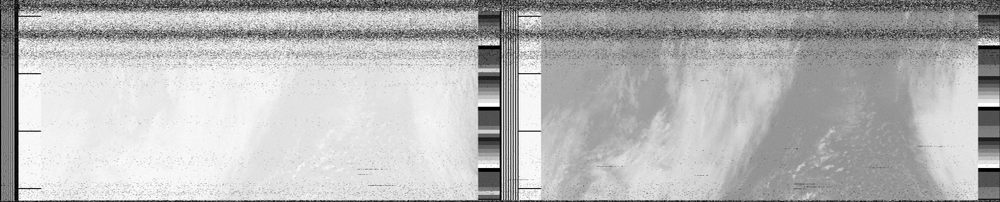
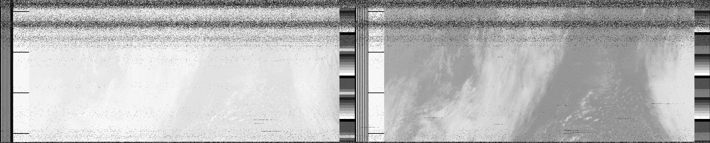

HUOM!!! NOAA 18 satelliitti ei ole enään käytössä.
NOAA 15, 18 ja 19 vastaanotto apt järjestelmällä
Jos sinulta löytyy ssb radio joka pääsee noin 137mhz niin tämä on mahdollista (esim rtl-sdr toimii) taikka käytät
jotain nettiradiota esim. spyserver.
Itselläni rtl-sdr ja pieni teleskooppiantenni joka on sidottu jesarilla puumajaan (joten ei kummosia kuvia).
Vaihe 1: satellliittien kyttäys
Suosittelen lataamaan gpredictin jolla satelliitteja voi kivasti seurata. Tästä nettisivusta voi myös olla hyötyä.
Vaihe 2: nauhoitus
No tässähän voit käyttää ihan mitä huvittaa mutta suosittelisin sdr++ tai satdumppia. Kaikki satelliitit käyttävät nfm modulaatiota ja 50khz kaistanleveyttä. Alla satellliittien taajudet:
| Satelliitti | Taajuus |
|---|---|
| NOAA 19 | 137,1000 mhz |
| NOAA 18 | 137,9125 mhz |
| NOAA 15 | 137.6200 mhz |
Vaihe 3: dekoodaus
Nyt kun sinulla on ne nauhoitukset voidaan aloittaa niiden dekoodaus. Tähän voi käyttää satdumppia tai mitä ikinä tahtookaan
Muutamia Kuvia
 

Antennin päivityksen jälkeen

toisen antennin päiviyksen jälkeen